1. GitHub にリポジトリを作成します。@Eclipseを使ってます。
今回は gh-pages-sample という名前で作成した。
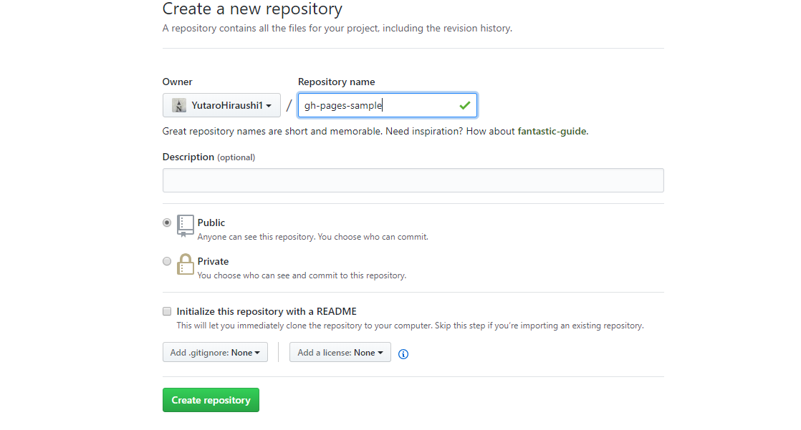Eclipse上でGitHubのプロジェクトをインポート 今回はGitHubにすでにあるプロジェクトをcloneします。
「ファイル」→「インポート」でインポートダイアログを開き、 「Gitからプロジェクト」を選択します。
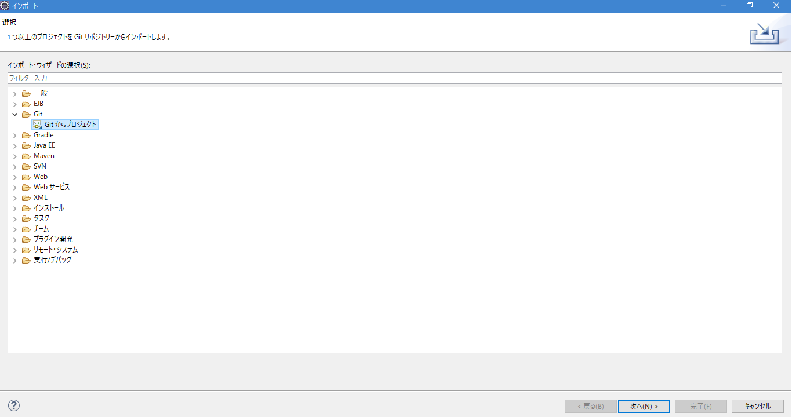URIを選択し、次へ。

GitHubのURIを入力します。
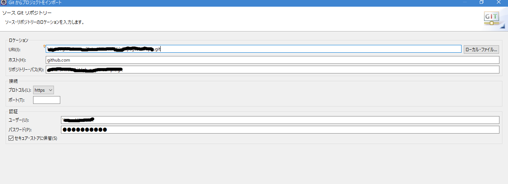複製するブランチを選択します。
下の場所が来るまで継ぎ柄を押します。
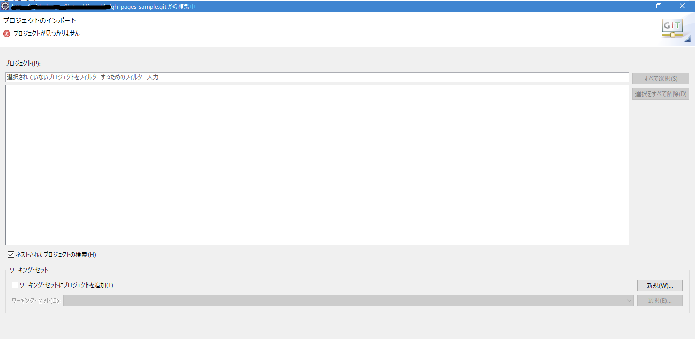Gitに移動してプロジェクトを選択して右クリックします。
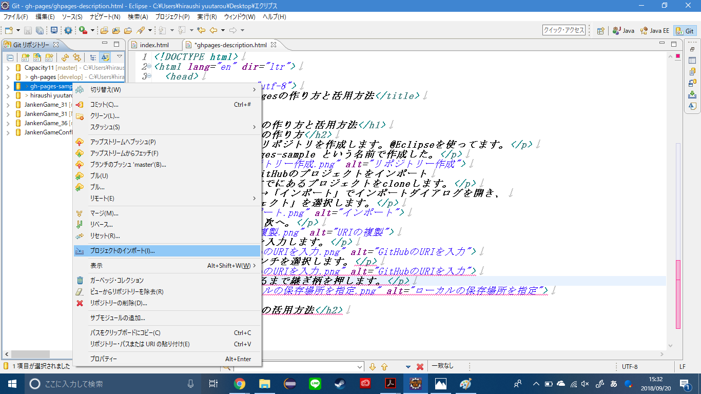このページに飛ぶのでそのまま完了してください。
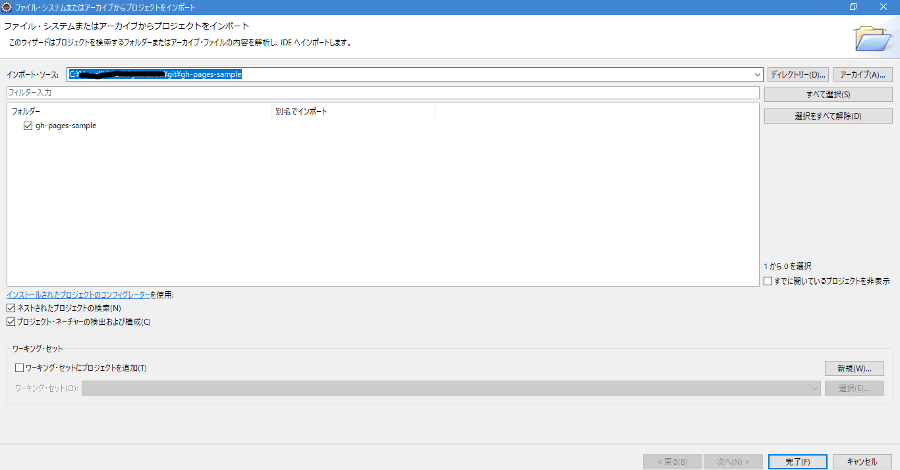3. ローカル環境で静的ページを作成し、GitHub にプッシュします 今回は以下のような感じで適当に index.html を作りまして、コミット〜プッシュを行いました。 JavaScript が動くことも確認したかったので、console.log() を1行入れています。
4. master ブランチを GitHub Pages として公開設定します いよいよ GitHub Pages の設定です。GitHubリポジトリの Settings → GitHub Pages → Source のところで、master branch を選択し、 その後 Save ボタンを押します。
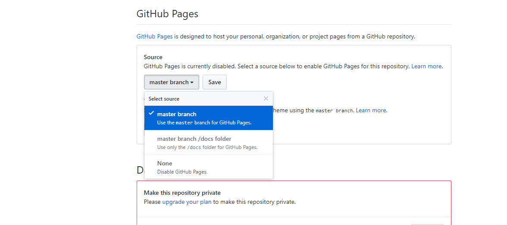5. 所定のURLにアクセスします URLは https://ユーザまたは組織名.github.io/リポジトリ名 となります。 今回のサンプルだとhttps://tipsnote.github.io/gh-pages-sample/ です。
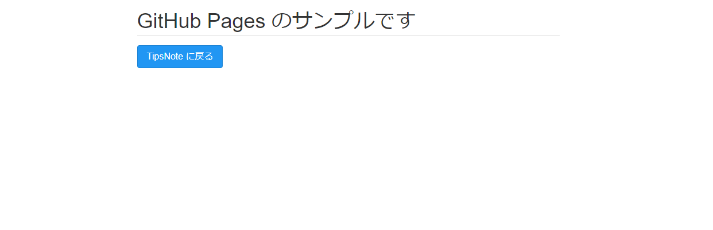このようにして簡単(Eclipse使ったので少し手間がかかってますが。)に作ることが出来ます。
GitHubPagesではデザインテーマを選び簡単にWebページを作ることができます。
まず、右上のSettingsをクリックします。
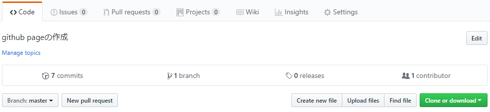GitHub Pagesのセクションまでスクロールして、Change themeをクリックします。
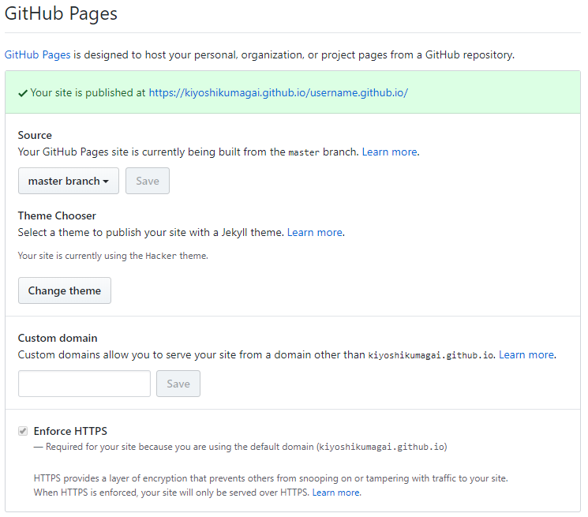12種類の中から好きな物を選びSelect themeをクリックして確定します。
これでもうWebサイトが完成しています。
ここに表示されているURLに行くと作ったWebサイトを表示することができます。
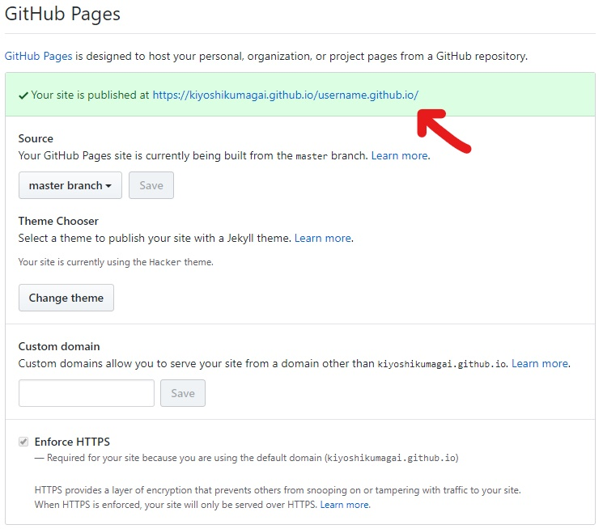また、GitHubPagesはマークダウン記法でも作ることができるのでHTMLがわからないという方は試してみてください。